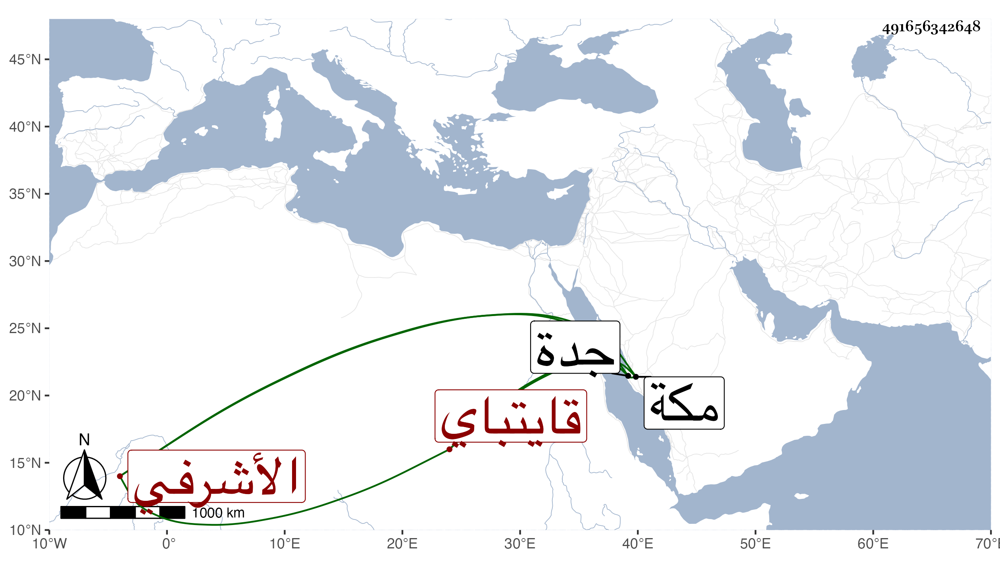

0902Sakhawi.DawLamic.ITO20230111-ara1.EIS1600.491656342648
Biography ID: 491656342648
18
طرباي الأشرفي قايتباي . استخلفه أخوه تنم حين سفره بعد قضاء أمر جدة في سنة ست وتسعين فأقام بها ثم بمكة إلى أن جاء المستقر عوضهما في التي تليها وهو ممن يحسن التلاوة ويجيد الطواف ويتشاهم
